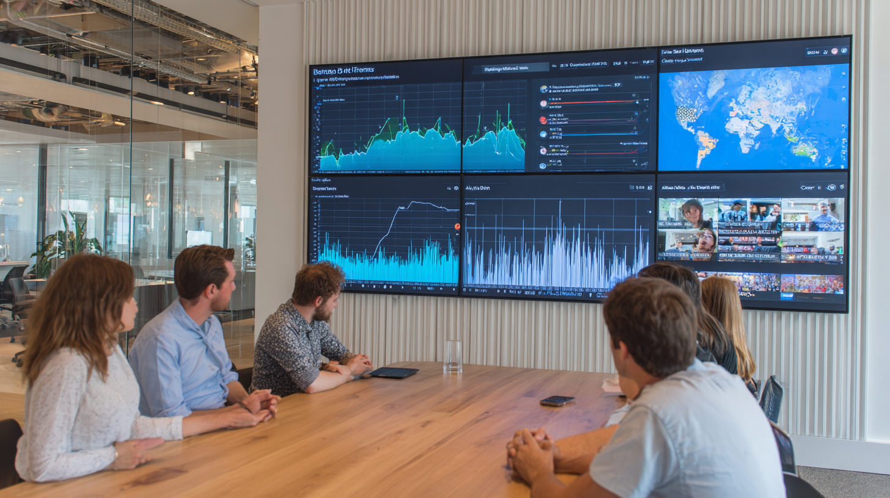

Discover how AI-powered real time travel trends analysis helps travel companies capture emerging demand patterns and adapt marketing strategies for maximum revenue growth.
The travel industry stands at the intersection of technology and human experience, where split-second decisions based on accurate data can mean the difference between capturing a market opportunity or watching it pass by. In today’s hyperconnected world, travelers’ preferences shift rapidly, influenced by social media trends, global events, economic fluctuations, and cultural phenomena spreading across digital platforms at unprecedented speeds. The traditional approach of relying on historical data and quarterly reports to understand travel patterns has become increasingly inadequate in this dynamic environment.
Real-time data has emerged as the lifeblood of modern travel industry operations, fundamentally transforming how businesses understand, predict, and respond to consumer behavior. Unlike static datasets offering retrospective insights, real-time information provides a continuous pulse of market activity, enabling travel companies to detect emerging trends as they form, identify shifting demand patterns before they fully materialize, and adjust their strategies with agility previously thought impossible. This shift from reactive to proactive decision-making represents a paradigm change in how the travel sector operates, competes, and serves its customers.
Applied AI travel technologies are at the forefront of this revolution, serving as the sophisticated engine to transform raw data streams into actionable intelligence. These AI systems process millions of data points from countless sources simultaneously, identifying subtle patterns and correlations otherwise invisible to human analysts. They learn from each interaction, continuously refining their predictive models and becoming more accurate over time. The convergence of AI with real-time data processing has created an unprecedented capability for travel businesses to understand not just what happened or what is happening, but what is likely to happen next.
The transformation extends beyond simple trend identification. AI technologies are revolutionizing travel trend analysis by democratizing access to sophisticated market intelligence, once the exclusive domain of large corporations with extensive research departments. Small boutique hotels can now access the same caliber of predictive insights as major hotel chains. Independent tour operators can identify emerging destination preferences with the same precision as global travel agencies. This leveling of the playing field has intensified competition while simultaneously creating new opportunities for innovation and differentiation.
The implications of this technological revolution ripple through every aspect of the travel ecosystem. Airlines adjust routes and pricing in real-time based on demand signals detected by AI algorithms. Hotels optimize their inventory and marketing campaigns using predictive models to anticipate booking patterns weeks in advance. Destination marketing organizations craft targeted campaigns resonating with emerging traveler segments identified through machine learning analysis. Travel agents and tour operators curate personalized experiences based on real-time preference indicators gathered from multiple digital touchpoints.
The foundation of AI-powered travel analytics rests on the fundamental capability of artificial intelligence to process, analyze, and derive meaning from vast quantities of data at speeds and scales far exceeding human capacity. Modern AI systems in the travel industry handle petabytes of information daily, encompassing everything from individual search queries and social media posts to global economic indicators and weather patterns. This comprehensive data processing creates a multidimensional view of the travel landscape capturing both macro trends and micro behaviors with remarkable precision.
AI in travel transforms this data deluge into coherent insights through sophisticated algorithms identifying patterns, detecting anomalies, and predicting future outcomes. These systems employ various AI techniques, including natural language processing to understand traveler sentiment from reviews and social media posts, computer vision to analyze destination imagery and video content, and deep learning networks to uncover complex relationships between seemingly unrelated variables. The result is a level of market understanding going beyond surface-level metrics to reveal the underlying drivers of travel behavior.
The benefits of using AI for real-time market analysis in the travel industry are transformative and multifaceted. Speed represents perhaps the most obvious advantage, with AI systems capable of processing and analyzing data in milliseconds, enabling businesses to respond to market changes as they occur rather than days or weeks later. This temporal advantage becomes particularly visible during volatile periods, such as sudden travel restrictions, natural disasters, or viral social media trends that can dramatically shift demand patterns within hours.
Accuracy and precision constitute another significant benefit, as AI systems can detect subtle signals and patterns human analysts might overlook. These systems excel at identifying weak signals potentially indicating emerging trends, distinguishing genuine market shifts from temporary fluctuations, and quantifying the relationships between various factors influencing travel decisions. The continuous learning capability of AI means these systems become increasingly accurate over time, adapting to new patterns and refining their predictive models based on outcomes.
Scale and comprehensiveness provide unprecedented market visibility, as AI systems can simultaneously monitor thousands of destinations, analyze millions of traveler interactions, and track countless variables influencing travel demand. This comprehensive monitoring creates a complete picture of the travel landscape, impossible to achieve through traditional market research methods. The ability to analyze data at both aggregate and individual levels enables businesses to understand broad market trends while also identifying niche opportunities and personalized preferences.
Machine learning algorithms represent the cognitive core of AI-powered travel analytics, functioning as sophisticated pattern recognition engines transforming historical and real-time data into predictive insights. These algorithms operate on the principle of learning from experience, continuously analyzing past travel behaviors, market conditions, and outcome relationships to build increasingly accurate models of future travel patterns. Unlike traditional statistical methods relying on predetermined rules and assumptions, machine learning systems discover patterns organically, often revealing unexpected correlations and insights to challenge conventional industry wisdom.
The process begins with feature extraction, where machine learning algorithms identify relevant variables from vast datasets that might influence travel behavior. These features could range from obvious factors like seasonal patterns and pricing to subtle indicators such as social media sentiment shifts or search query linguistics. The algorithms then apply various techniques to identify patterns within these features. Supervised learning models train on historical data where outcomes are known, learning to predict future bookings based on past patterns. Unsupervised learning algorithms discover hidden structures in data, revealing traveler segments or destination clusters previously unrecognized. Reinforcement learning systems optimize decision-making through trial and error, continuously improving recommendations and predictions based on feedback.
These identified patterns serve as the foundation for predicting future trends with remarkable accuracy. When machine learning algorithms detect certain search patterns historically preceded booking spikes for specific destinations, they can alert businesses to impending demand surges. Similarly, by recognizing the correlation between social media buzz and subsequent travel interest, these systems can predict which emerging destinations will experience increased popularity months before traditional indicators would reveal the trend. The predictive power extends to individual traveler behavior, anticipating when specific customer segments are most likely to book, what types of experiences they’ll seek, and which marketing messages will resonate most effectively.
The sophistication of modern machine learning in travel predictions goes beyond simple pattern matching. Deep learning neural networks can process unstructured data like images and text, understanding the visual and emotional elements influencing travel decisions. Ensemble methods combine multiple algorithms to create more robust predictions, reducing the impact of any single model’s weaknesses. Time series analysis captures temporal patterns, accounting for seasonality, trends, and cyclic behaviors characterizing travel demand. These advanced techniques enable predictions to account for the complex, multifaceted nature of travel decision-making.
The effectiveness of AI-powered travel analytics depends fundamentally on the quality, diversity, and timeliness of data sources feeding into the system. Modern travel trend analysis draws from an extensive ecosystem of data sources, each providing unique insights into different aspects of traveler behavior and market dynamics. The challenge lies not in finding data but in intelligently selecting, integrating, and processing the most relevant information streams to create a coherent and actionable picture of the travel landscape.
Primary data sources include direct traveler interactions with digital platforms, providing first-party insights into actual behavior rather than stated intentions. This encompasses search queries on travel websites, browsing patterns on destination pages, booking transactions, and post-trip reviews. These direct interaction data points offer high-fidelity signals about traveler preferences, decision-making processes, and satisfaction levels. The granularity of this data enables analysis at individual, segment, and market levels, revealing patterns spanning from personal preferences to global trends.
Secondary data sources expand the analytical scope by incorporating external factors influencing travel decisions. Economic indicators such as exchange rates, GDP growth, and consumer confidence indices provide context for understanding travel demand fluctuations. Weather data and climate patterns help predict seasonal variations and destination preferences. News feeds and event calendars identify factors that might drive or deter travel to specific locations. Demographic and socioeconomic data enable more nuanced understanding of different traveler segments and their distinct behaviors.
TravelAI and similar platforms excel at aggregating and processing this diverse information through sophisticated data pipeline architectures. The aggregation process begins with data ingestion systems continuously collecting information from multiple sources, handling various formats, frequencies, and volumes. Real-time streaming technologies process high-velocity data like social media feeds and search queries as they occur, while batch processing systems handle larger historical datasets and periodic updates. Data validation and cleaning algorithms ensure quality and consistency, identifying and correcting errors, removing duplicates, and standardizing formats across different sources.
The processing methodology employs advanced techniques to transform raw data into meaningful insights. Natural language processing extracts sentiment and intent from text-based sources. Geospatial analysis maps travel patterns and destination relationships. Statistical normalization accounts for seasonal variations and external factors. Machine learning models identify patterns and generate predictions. The entire process operates in a continuous cycle, with new data constantly flowing through the system, refining models, and updating insights in real-time. This creates a living, breathing intelligence system evolving with the market it monitors.
Social media platforms have evolved into powerful barometers of travel sentiment and preference, offering unprecedented windows into the collective consciousness of travelers worldwide. Every day, millions of users share their travel dreams, experiences, and recommendations across platforms like Instagram, Facebook, Twitter, TikTok, and Pinterest, creating a rich tapestry of data revealing emerging destinations, shifting preferences, and evolving travel styles. This organic, user-generated content provides authentic insights traditional market research methods struggle to capture, reflecting genuine enthusiasm and concerns rather than responses to structured surveys.
The analysis of social media data for travel intelligence employs sophisticated natural language processing and computer vision technologies to extract meaning from both textual and visual content. Sentiment analysis algorithms parse through comments, captions, and reviews to understand emotional responses to destinations and experiences. These systems can distinguish between genuine enthusiasm and polite disappointment, identifying subtle linguistic cues unlocking true satisfaction levels. Entity recognition technology identifies specific destinations, attractions, and travel services mentioned in posts, tracking their frequency and context to measure popularity and reputation.
Visual content analysis has become increasingly important as platforms like Instagram and TikTok dominate travel inspiration. AI-powered image recognition systems analyze millions of travel photos and videos to identify trending destinations, popular activities, and emerging aesthetic preferences. These systems can detect when certain locations experience sudden increases in user-generated content, often identifying emerging hotspots before they appear in traditional travel guides. The analysis extends to understanding visual styles and themes resonating with different traveler segments, informing both destination marketing and product development strategies.
Hashtag analysis and social listening provide real-time indicators of travel interest and intent. By monitoring hashtag usage patterns, AI systems can identify emerging travel themes, from sustainable tourism to workcations, often months before they manifest in actual bookings. Social listening tools track conversations about specific destinations or travel brands, identifying pain points, unmet needs, and opportunities for innovation. The temporal analysis of these social signals reveals how interest builds, peaks, and potentially wanes, enabling businesses to time their market entry and marketing campaigns optimally.
User sentiment analysis goes beyond simple positive or negative classification to understand the nuanced emotions and motivations driving travel decisions. AI systems can identify specific aspects of travel experiences generating the most enthusiasm or frustration, from accommodation amenities to local cuisine. This granular understanding enables businesses to focus their improvements and marketing messages on the factors which matter most to their target audiences. The analysis also reveals how sentiment varies across different demographic groups, enabling more personalized and effective engagement strategies.
Search engine data represents one of the most powerful predictive indicators in travel analytics, capturing the moment when vague travel desires crystallize into concrete intentions. Every search query represents a traveler at some stage of their journey planning process, from initial inspiration to final booking decisions. The aggregate patterns of billions of searches reveal not just where people want to go, but when they want to go, what they want to do, and what concerns or interests shape their travel decisions. This data provides a leading indicator of travel demand, often revealing trends weeks or months before they manifest in actual bookings.
The sophistication of modern search analysis extends far beyond simple keyword tracking. Natural language processing algorithms analyze the complete context of search queries, understanding the intent behind different phrasings and question formats. Long-tail query analysis reveals specific interests and concerns which might not appear in broader trend data. The sequence and evolution of searches from individual users tell stories about their decision-making journey, revealing how initial broad searches narrow into specific destination and date combinations. Semantic analysis groups related searches together, identifying emerging travel themes even when expressed in different words or languages.
Geographic and temporal patterns in search data provide insights for demand forecasting and capacity planning. AI systems identify when search interest for specific destinations begins to spike, often correlating with triggering events like favorable exchange rates, major events, or viral social media content. The lead time between search and booking varies by destination type and traveler segment, patterns machine learning algorithms learn to recognize and factor into their predictions. Seasonal patterns become clear through year-over-year analysis, while anomaly detection identifies unusual spikes or drops potentially indicating emerging opportunities or threats.
The predictive power of search engine trends multiplies when combined with other data sources. Search patterns coinciding with positive social media sentiment often precede significant demand increases. Conversely, searches for travel insurance or cancellation policies might signal growing concerns about specific destinations. The correlation between search trends and eventual booking patterns enables increasingly accurate demand forecasting, allowing businesses to optimize pricing, inventory, and marketing investments. These predictions become particularly valuable for emerging destinations or new travel products where historical booking data may be limited or non-existent.
Booking platform data represents the convergence point where travel interest transforms into committed decisions, providing the most concrete validation of predicted trends. Unlike social media sentiment or search intentions, booking data reflects actual financial commitments, offering indisputable evidence of travel demand patterns. This data encompasses not just completed transactions but the entire booking funnel, from initial property views to cart abandonments, providing insights into the decision-making process and factors influencing conversion.
The richness of booking platform analytics extends beyond simple transaction records to encompass a wealth of behavioral data. Click-through rates on different properties or destinations reveal relative interest levels. Time spent comparing options indicates decision complexity and price sensitivity. The sequence of viewed options before booking reveals preference hierarchies and trade-off decisions. Cart abandonment patterns identify friction points in the booking process or price thresholds to deter completion. These behavioral indicators often predict future booking trends more accurately than historical transaction data alone.
Advanced analytics on booking platforms employ machine learning to identify complex patterns validating or refining trend predictions made from other data sources. Cohort analysis reveals how different traveler segments respond to emerging trends, enabling more targeted predictions and recommendations. Price elasticity modeling determines optimal pricing strategies for different market conditions and customer segments. Demand forecasting algorithms combine booking pace data with external factors to predict future occupancy and revenue. Attribution modeling identifies which marketing channels and messages most effectively convert interest into bookings.
The validation role of booking data in trend prediction cannot be overstated. When social media buzz and search interest for a destination translate into actual bookings, it confirms the trend’s commercial viability. Conversely, when high interest doesn’t convert to bookings, it signals potential barriers like pricing, accessibility, or perception issues in need of addressing. This feedback loop enables continuous refinement of predictive models, improving their accuracy over time. The granular nature of booking data also reveals nuances other data sources might miss, such as differences between leisure and business travel patterns or variations in booking lead times across different market segments.

The translation of AI-driven insights into practical business applications represents the bridge between theoretical capability and tangible value creation in the travel industry. Implementation success requires more than just access to sophisticated analytics; it demands organizational readiness, strategic alignment, and operational integration enabling businesses to act on insights with speed and precision. The most successful implementations recognize real-time travel intelligence is not just a technology upgrade but a fundamental transformation in how travel businesses operate and compete.
Practical applications of AI-driven travel insights span the entire spectrum of travel industry operations, from strategic planning to tactical execution. Revenue management systems use real-time demand signals to optimize pricing across thousands of route or room combinations simultaneously, capturing maximum value from each transaction while maintaining competitive positioning. Marketing teams leverage predictive insights to identify emerging customer segments and craft targeted campaigns resonating with specific traveler preferences identified through AI analysis. Product development teams use trend predictions to design new travel experiences aligned with emerging preferences before competitors recognize the opportunity.
The key to successful implementation lies in creating actionable intelligence connecting insights directly to decision-making processes. This requires translating complex analytical outputs into clear, contextual recommendations decision-makers can quickly understand and act upon. Visualization tools and dashboards play an important role, presenting real-time insights in intuitive formats to highlight critical trends, anomalies, and opportunities. Alert systems notify relevant stakeholders when predetermined thresholds are crossed or when unusual patterns emerge, enabling rapid response to market changes.
Integration with existing business systems ensures insights flow seamlessly into operational workflows rather than existing in analytical silos. API connections enable real-time data exchange between AI platforms and reservation systems, customer relationship management tools, and marketing automation platforms. This integration enables automated responses to certain market conditions, such as adjusting pricing when demand patterns shift or triggering marketing campaigns when opportunity indicators emerge. The goal is to embed intelligence into every customer touchpoint and business decision, creating an organization operating with continuous market awareness.
The transformative potential of real-time travel intelligence extends to competitive differentiation and market positioning. Businesses which effectively leverage these capabilities can identify and capitalize on micro-trends before they become mainstream, establishing first-mover advantages in emerging market segments. They can personalize customer experiences at scale, offering tailored recommendations and services reflecting individual preferences identified through AI analysis. The ability to predict and respond to demand fluctuations with precision enables more efficient resource allocation, reducing waste while improving service quality.
Strategic planning in the travel industry has evolved from annual exercises based on historical data to continuous processes informed by real-time intelligence. AI insights enable companies to develop dynamic strategies to adapt to changing market conditions while maintaining long-term vision and objectives. This new paradigm requires organizations to balance strategic stability with tactical flexibility, using AI-driven intelligence to inform both immediate decisions and long-term investments.
The application of real-time data for operational planning transforms how companies manage their day-to-day activities and resources. Workforce scheduling algorithms use demand predictions to optimize staffing levels, ensuring adequate service coverage during peak periods while avoiding overstaffing during slower times. Inventory management systems use booking pace indicators and demand forecasts to make procurement decisions, reducing waste and stockouts. Maintenance scheduling incorporates demand patterns to minimize service disruptions during high-occupancy periods. These operational optimizations compound over time, creating significant efficiency gains and cost savings.
Capacity management represents one of the most impactful applications of AI-driven insights in strategic planning. Airlines use predictive models to adjust flight frequencies and aircraft assignments based on anticipated demand patterns. Hotels employ dynamic room allocation strategies to balance different distribution channels and customer segments to maximize both occupancy and revenue. Tour operators adjust group sizes and departure frequencies based on booking trends and demand indicators. These capacity decisions, informed by real-time intelligence, ensure supply aligns with demand, reducing both lost revenue from insufficient capacity and costs from excess capacity.
Pricing strategies have become increasingly sophisticated with the integration of real-time market intelligence. Dynamic pricing algorithms continuously adjust rates based on demand signals, competitive positioning, and external factors influencing willingness to pay. These systems go beyond simple supply and demand curves to incorporate psychological pricing principles, customer lifetime value considerations, and strategic objectives. The ability to test and refine pricing strategies in real-time enables companies to find optimal price points to balance volume and margin objectives while maintaining brand positioning.
Market expansion and investment decisions benefit significantly from AI-driven trend analysis. Real-time intelligence helps identify emerging destinations before they become saturated, revealing opportunities for early market entry. Predictive models assess the viability of new routes, properties, or services based on similar market patterns and traveler behavior indicators. Risk assessment algorithms evaluate external factors potentially impacting investment returns, from economic indicators to climate change projections. This intelligence-driven approach to strategic planning reduces investment risk while identifying opportunities traditional analysis might overlook.
The integration of AI insights into strategic planning also enhances organizational agility and resilience. Scenario planning models use real-time data to continuously update probability assessments for different future states, enabling companies to prepare for multiple contingencies. Early warning systems identify potential disruptions before they materialize, allowing proactive risk mitigation. The continuous learning nature of AI systems means strategic planning capabilities improve over time, incorporating lessons from past decisions to enhance future planning accuracy.
The human element remains primary in strategic planning, with AI serving as an intelligence amplifier rather than a replacement for strategic thinking. Successful organizations combine AI-driven insights with human expertise, intuition, and creativity to develop data-informed and visionary strategies. The role of leadership evolves to focus on setting strategic direction, making value-based decisions, and managing the cultural transformation required to become a truly data-driven organization.
The convergence of AI in travel and real-time data analytics has fundamentally transformed how the travel industry understands, predicts, and responds to market dynamics. This technological revolution extends far beyond simple automation or efficiency gains, representing a paradigm shift in how travel businesses create value, compete, and serve their customers. Organizations successfully harnessing these capabilities gain unprecedented market visibility, predictive accuracy, and operational agility translating into sustainable competitive advantages.
The journey toward AI-powered market intelligence requires more than technological adoption; it demands organizational transformation, cultural change, and strategic vision. Success comes to those who recognize real-time intelligence is not just about having better data but about making better decisions faster and with greater confidence. As the travel industry continues to evolve in response to changing traveler expectations, global events, and technological advances, the ability to capture and act on emerging demand signals will increasingly separate market leaders from followers.
Looking ahead, the continued advancement of AI technologies promises even greater capabilities for understanding and predicting travel behavior. Quantum computing may enable analysis of vastly more complex pattern relationships. Augmented reality could provide new data streams about traveler preferences and behaviors. Blockchain technology might create more transparent and comprehensive data ecosystems. The organizations building strong foundations in AI-powered market intelligence today will be best positioned to leverage these future innovations.
The democratization of AI-powered travel analytics means businesses of all sizes can now access sophisticated market intelligence, once the exclusive domain of industry giants. This leveling of the playing field creates both opportunities and challenges, as competitive advantage shifts from who has access to data to who can most effectively transform this data into actionable insights and superior customer experiences. The winners in this new landscape will be those who combine technological sophistication with human creativity, strategic vision with operational excellence, and data-driven insights with genuine customer focus.
The future of travel belongs to organizations able to navigate the complexity of global markets with the precision of real-time intelligence, anticipate traveler needs before they’re fully expressed, and deliver experiences exceeding expectations while operating with optimal efficiency. AI-powered market intelligence provides the foundation for this future, but success ultimately depends on how effectively organizations integrate these capabilities into their DNA, creating cultures of continuous learning, adaptation, and innovation to thrive in an ever-changing world.